Research-Engineer CurriculumNo. 02 of 39 · Sept 2026 edition
How to Use This Curriculum
This is the operating manual for the whole program. Read it first, once, then start Volume 1. It tells you the order to study, how to pace 4+ hours a day, how the volumes connect, and how one big project threads through everything.
1. What this curriculum promises
When you finish, you can do three things:
- Explain how an LLM (large language model) is built end to end. Data, tokenization (turning text into model-readable pieces), pre-training, distributed training, post-training and RL (reinforcement learning: training from reward signals), evaluation, inference and serving. No hand-waving. You will have built a tiny one yourself.
- Think like a researcher. Read a paper and extract its real claim. Design an experiment with baselines (the simple method you must beat) and ablations (removing one piece at a time to see what matters). Know what a result proves and what it does not.
- Ship like an engineer. Take a model from a notebook to production: pipelines, monitoring, cost control, reliability. Build solutions that work on the planet, not just in a demo.
The bar you are clearing. That combination, research depth plus production proof, is what senior-level (L5-L7) Research Engineer, Applied AI Engineer, and ML Engineer loops at frontier labs (the labs building the largest AI models) actually test.
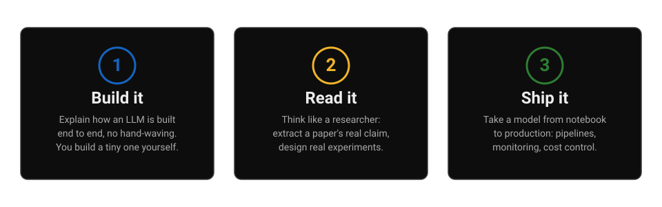
- Three boxes, left to right. Each box is one promise from the list above. The diagram maps the list; it adds nothing new.
- The middle box is the bridge. Reading papers and designing experiments is what turns building (left) into shipping (right).
2. Study order and the dependency graph
Why this comes next. The promise is set. Now the order it runs in: the volumes form a dependency graph, and this section shows how they nest so you never read a chapter whose foundations you skipped.
The volumes form a Russian doll. Each one assumes you read the ones before it. Concepts are taught once, then referenced by name. Do not skip ahead: Volume 7 (post-training) will use words like "KL divergence" (how far one probability distribution sits from another) and "FSDP" (fully sharded data parallel: splitting a giant model across GPUs) without re-explaining them, because Volumes 1 and 6 already built them.
Vol 0 (this guide)
└─ Vol 1 · Math for ML
└─ Vol 2 · ML foundations bridge
└─ Vol 3 · Deep learning for researchers
└─ Vol 4 · LLM internals *
└─ Vol 5 · Pre-training *
└─ Vol 6 · Distributed training *
└─ Vol 7 · Post-training and RL *
└─ Vol 8 · Inference and serving *
└─ Vol 9 · Agents, RAG, production GenAI
└─ Vol 10 · Productionizing and MLOps (running models reliably in production)
└─ Vol 11 · Research methods
└─ Vol 12 · Guided paper spine
└─ Vol 13 · ML system design
└─ Vol 14 · Communicating Research
DSA track ══════════════ runs parallel to everything ═════▶
* = THE CORE BUILD: one tiny LLM grown volume by volume.
Figure 0.2. The dependency graph. Read top to bottom. The DSA track runs alongside, 1-2 hours a day.
How to read this diagram
- Top to bottom is time. The asterisks mark the core build; the DSA (data structures and algorithms) line at the bottom never touches the spine.
- Indentation is dependency. Deeper indentation means more prerequisites assumed.
- The asterisks mark the core build (volumes 4-8): the weeks where the labs matter most.
- What breaks if you skip: jumping to Volume 7 without Volume 1 means the DPO derivation looks like magic. The math is the foundation everything stands on.
| Phase | Volumes | Time | What you gain |
|---|---|---|---|
| Foundation | 1-3 | ~2 weeks | The math and ML/DL vocabulary every later volume speaks |
| Core build | 4-8 | ~3 weeks | A tiny LLM you trained, aligned, and served yourself |
| Production | 9-10 | ~1 week | Agents, RAG, and shipping ML that survives contact with reality |
| Research | 11-12 | ~2 weeks | Paper reading, experiment design, the ideas that moved the field |
| Review | 13-14 | ~1 week | System design reps and research communication reps |
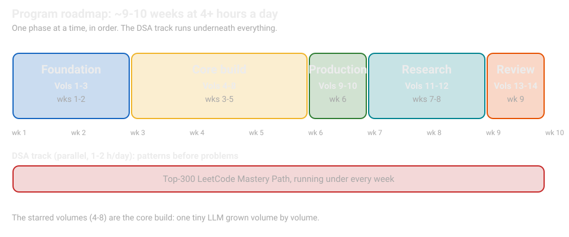
- Left to right is time. The bar lengths mirror the table above; the core build gets the most weeks because that is where the labs live.
- The lane underneath is the DSA track from section 6: same schedule, separate lane.
3. Pacing: 4+ hours a day
Why this comes next. The order is set. Now the schedule: how much of your day this takes, and what a working day looks like.
Total is roughly 9-10 weeks at 4+ hours a day, with the DSA track running 1-2 hours a day in parallel. A day that works:
| Block | What to do |
|---|---|
| Hour 1-2 | Read one chapter deeply. Work the examples by hand. Trace the numbers. |
| Hour 3 | Do the lab. Run the code. Break one thing on purpose and observe what changes. |
| Hour 4 | DSA track: one pattern, 2-3 problems. Or paper reading in Phase 4. |
| Bonus time | Re-explain the day's hardest idea out loud, from memory, in plain words. If you cannot, you do not know it yet. |
The re-explanation rule. Reading is not learning. Every day ends with you explaining the hardest idea of the day out loud, from memory, in simple sentences. This is the single highest-leverage habit in the program.
Attention management. Work in 50-minute blocks with 10-minute breaks. If a chapter feels easy, do its lab anyway; the lab is where the understanding actually forms.
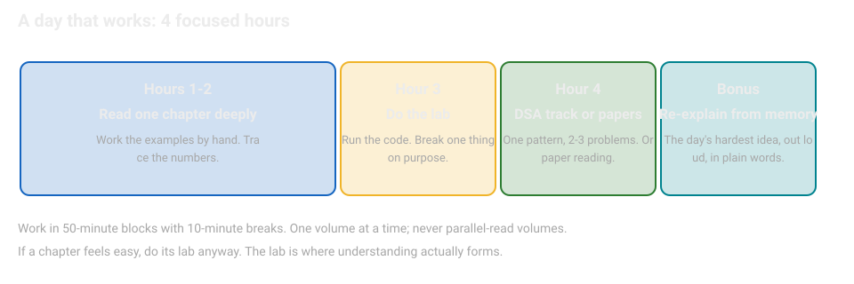
- Top to bottom is the day. The block order is the point: read first, then lab, then DSA. Do not reorder.
- The bonus block is the test. It maps to the re-explanation rule in the callout above; the day is not done until it passes.
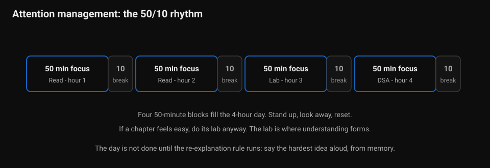
- The four blue blocks are the work; the small boxes are the resets.
- Hour 3 is always lab: if a chapter felt easy, do its lab anyway. The lab is where understanding forms.
- The day ends with the re-explanation rule: say the hardest idea aloud, from memory.
4. The capstone: build an LLM from scratch
Why this comes next. The schedule is set. Now the thread that runs through it: one capstone project, built volume by volume, so every volume has somewhere to land.
One project threads through Volumes 1-8. You build the same tiny model up, volume by volume:
| Volume | Capstone lab |
|---|---|
| 1 · Math | Autograd from scratch in NumPy: differentiate a tiny network by hand first, then verify with code |
| 4 · LLM internals | Attention (the mechanism letting each token weigh the other tokens) in NumPy/JAX with worked numerics; a BPE tokenizer (byte-pair encoding: the algorithm that chops text into pieces) trained from scratch |
| 5 · Pre-training | Train a tiny GPT on a toy corpus; plot loss curves; feel what the learning-rate (step size) and batch-size (examples per step) knobs do |
| 6 · Distributed | Data-parallel toy run (the same model copied on each GPU, graphics processing unit: the specialized chip that runs the training, with different data on each); apply FSDP concepts to the tiny model; profile where time goes |
| 7 · Post-training | SFT (supervised fine-tuning: training on example answers) then DPO (direct preference optimization: training from human preferences) on the tiny model; measure the behavior shift with evals (evaluation tests) you write |
| 8 · Inference | Serve the tiny model with a KV cache (stored key-value memory that makes generation fast); benchmark latency (time per request) and throughput (requests per second); try quantization (shrinking the model's number precision) |
By Volume 8 you have personally touched every stage of the LLM lifecycle. In a design review, "I built a tiny model end to end" plus the ability to explain each stage is worth more than any certificate.
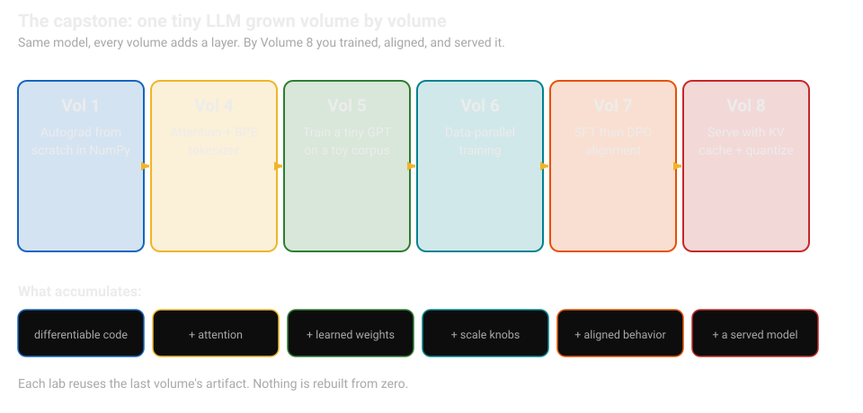
- Left to right is the build order. Each step's artifact feeds the next; the table above names the lab at each step.
- The bottom row is what accumulates. Read it as the running inventory of what the model can do by each stage.
- Follow the arrows, not the table. The arrows show the artifact handoff; the table above shows what you do at each handoff.
5. How to study each volume
Why this comes next. The capstone gives every volume a destination. Now the method for each volume: the study anatomy you will repeat sixteen times.
Every volume follows the same anatomy. Learn it once:
- Chapters teach one idea each, from zero, climbing a ladder: Step 1 gives the simplest mental model with a visual, Step 2 adds how it works, Step 3 shows the full picture with a worked example using real numbers. Every chapter also names the classic misunderstanding to avoid and ends with a design prompt to quiz yourself.
- "How to read this diagram" walkthroughs sit under every significant figure. Read them. They are the fastest path to the mental model.
- Labs are runnable code. Change one variable at a time and observe. Mark GPU labs "RunPod-ready" (runnable on a rented cloud GPU) when a GPU helps.
- "Design prompt" boxes list the design question each chapter answers. Cover the answers and quiz yourself before moving on.
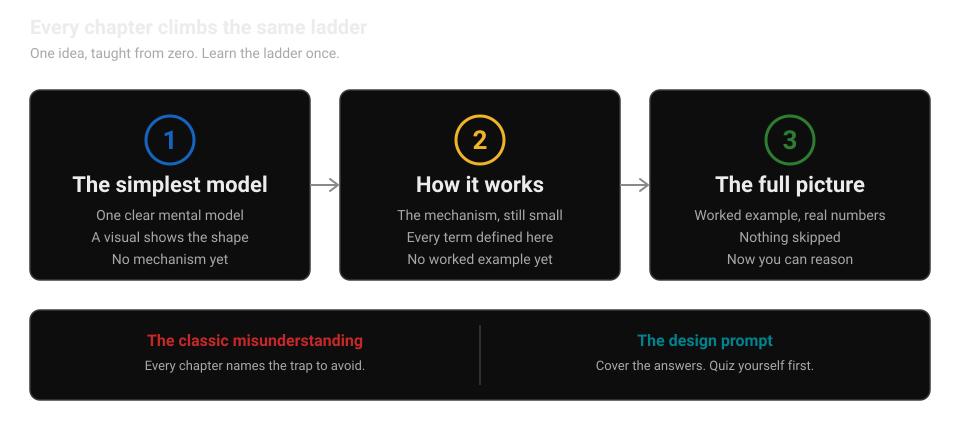
- Left to right is the climb. Step 1 gives the simplest mental model with a visual. Step 2 adds the mechanism, still small. Step 3 shows the full picture with a worked example using real numbers.
- The foundation bar holds for every chapter. The classic misunderstanding names the trap to avoid. The design prompt is the quiz: cover the answers and answer out loud.
- This maps to the bullet list above. The diagram is the list, drawn. Learn the ladder once and you know how every volume teaches.
What "done" means for a chapter. You can (a) define every term in plain words, (b) work the example's numbers yourself, (c) explain the diagram to someone else, (d) answer its "Design prompt" questions out loud. If any of the four fails, re-read before advancing.
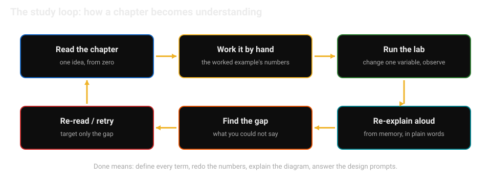
- Top row, left to right. Each step is more active than the last: reading is the least active, the lab the most.
- Bottom row, right to left. The re-read targets only the gap you found, not the whole chapter.
- The arrow back up closes the loop. Repeat only the steps that failed the "done" checklist in the callout above.
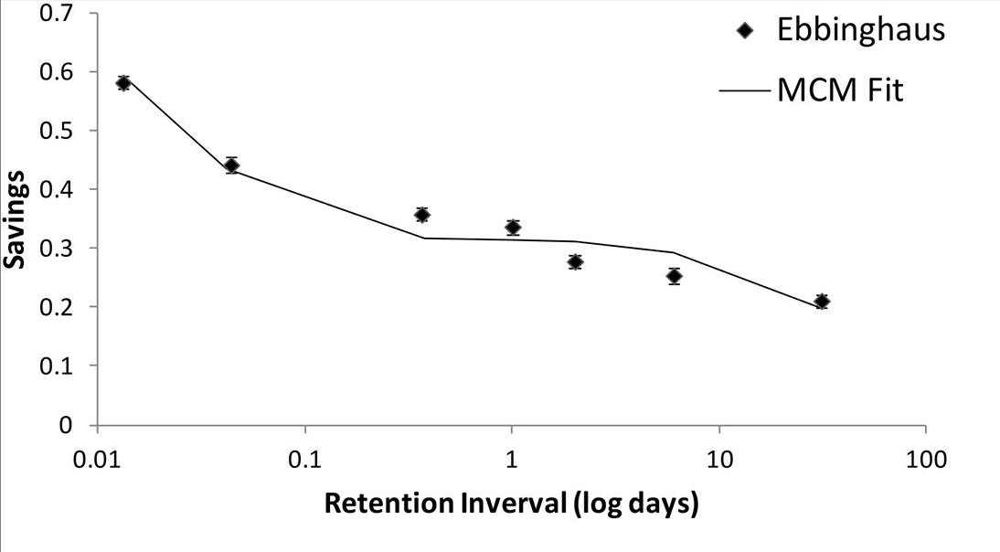
- The y-axis is savings. How much less relearning you need after a given gap. The x-axis is the gap in days, on a log scale.
- The drop is steepest early. Most of the loss happens in the first 24 hours. That is why the re-explanation rule sits at the end of every study day.
- Retrieval resets the curve. Every re-explanation and every lab re-run is a retrieval event that flattens the drop. Spaced effort beats re-reading.
6. The parallel DSA track
Why this comes next. The study method is set. Now the second track: DSA runs in parallel, 1-2 hours a day, because the interview loop tests both.
Data structures and algorithms run alongside the spine, not inside it: 1-2 hours a day, pattern by pattern. The track file is the Top-300 LeetCode Mastery Path: organized by pattern, with code templates and deep links into the existing 500-problem atlas.
Rule: patterns before problems. Learn the pattern's template, then solve 2-3 problems with it, then move on. Never grind problems without naming the pattern first.
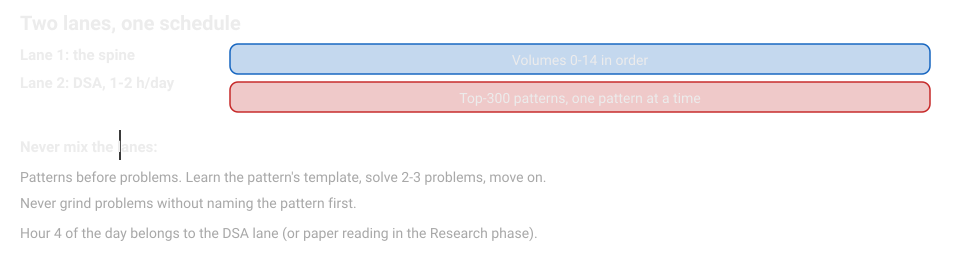
- Top lane: the spine. Volumes 0 through 14, in order, one at a time.
- Bottom lane: DSA. 1-2 hours a day from the Top-300 path, one pattern at a time, while the spine runs.
- The rule on the left. Every DSA session starts from a named pattern, never from a random problem.
7. Existing modules you already own
Why this comes next. The two tracks are set. Now the inventory: modules you already own, slotted into the spine where they belong, so nothing is studied twice.
These are slotted into the spine where noted. Do not re-study them cover to cover unless a volume tells you to revisit a chapter:
- RRK Agentic AI Textbook v2 + Interview QA Bank v2 (agents, RAG, evals, guardrails, GPU infra basics) - the core of Volume 9.
- ML/DL fundamentals refresher + 300 Q&A - classical ML and deep learning basics; Volumes 2 and 3 build on top of it.
- DSA Pattern Fieldbook v3, LeetCode 500 Atlas, 300-problem curriculum - the DSA track's deep reference.
- FDE interview materials - applied alongside Volumes 9-10 for customer-facing engineering roles.
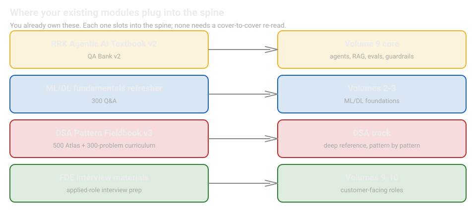
- Left column: what you own. The four modules from the list above, with their contents.
- Right column: where each one slots in. Follow the arrows from left to right. The colors match: same color, same destination.
- The point is restraint. A module is a deep reference, not a second curriculum. Open it when the spine points you to it.
8. Ground rules
Why this comes next. Everything is placed. Now the rules that hold it together: five gates that stay closed until you pass them.
- No skipping the math. Volume 1 is the foundation. Everything later stands on it.
- Labs are mandatory. Reading about training is not training. Run the code.
- One volume at a time. Finish the volume, do its capstone lab, then advance.
- Honest markers. Where a volume says a number is illustrative or a treatment is reconstructed from first principles, believe it. The curriculum never invents facts.
- Generic and portable. These files contain no personal information and work fully offline. Copy them anywhere.
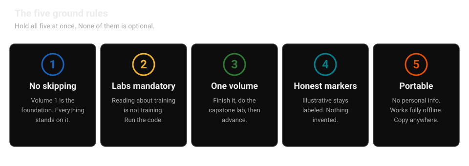
- Five gates, left to right. Each gate is one rule from the list above. All five must hold before you advance.
- The first three gates are discipline. Do not skip the math, run every lab, and finish one volume before starting the next.
- The last two gates are integrity and portability. Label illustrative numbers honestly, and keep everything offline and free of personal information.
Design prompt
- What are the three things this curriculum promises you will be able to do at the end?
- Why must Volume 7 be read after Volumes 1 and 6, in your own words?
- What is the capstone thread, and what does it produce by Volume 8?
- What does "done" mean for a chapter?
Where to go next. Start with Volume 0 of the crash pack for the study method in ten minutes, then read Volume 1: Math for ML first, in order. Open the DSA track alongside from day one. The index page maps all 39 volumes and the 10 role tracks.
Watch and go deeper
Three short videos on how to learn hard things well. They match the study rules on this page, one for one.
Go deeper
- Learning How to Learn (Coursera) The full free course behind Oakley's talk: chunking, procrastination, memory techniques.
- The Feynman Technique (Farnam Street) A written walkthrough of the four-step explain-it-simply method.
- The Pomodoro Technique (official site) The 25-minute focus blocks this page's pacing section is built on.
- Deep Work rules (Cal Newport) The four rules for distraction-free focused study sessions.
- How to Read a Paper (S. Keshav, PDF) The three-pass method for reading research papers, referenced by the paper-spine volumes.